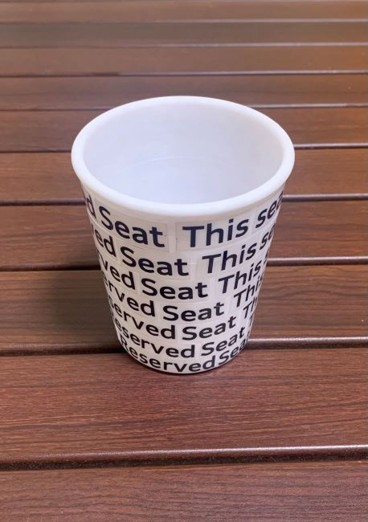
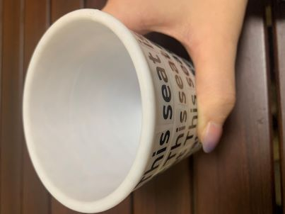

カフェでの席取り
カフェで日本人はタオルなどの自分が持っているもので席をとることが多いが、
外国人にはその文化がないので前の人の忘れものと勘違いされてしまうことがある。
班で出した意見をもとにする
外国人に会話をせず席をとったことを伝える→英語を使う
自分の所有物を使わないで席をとる置いたものがとられる恐れ→お店に置いておく
カフェに溶け込む席とりGoods
3Dプリンターを使ってコップの形を作った。

コップのふちを丸くして紙コップ風にしてみた

側面はReserved Seat This seat is not available というシールを貼った。
コップの形にすることで重ねた時もかさばらない
英語を使用することで外国人にも通じやすくなる
カフェに置いてあってもなじむ